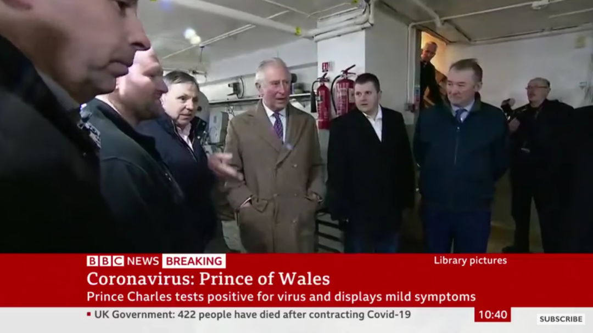
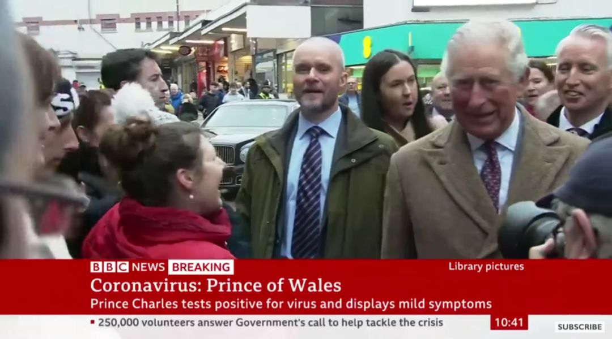

旅欧中国留学生的艰难回国路
原文链接 备份链接 疫情暴发之初，在欧洲的中国留学生普遍比较平静。随着疫情在欧洲迅速蔓延，留学生们就算“确有回国需求”，也很难立即回来，直航纷纷取消，转机充满变数，包机需要审批，既然暂时回不来，那就只能留下来继续抗疫 文 |《财经》记者 …

相比成年留学生群体
未成年中国留学生面临更大的压力

16岁的苏思是一位在英国留学的十二年级（高二）学生。3月16日，学期还没有结束，她离开了伦敦郊外的寄宿中学，回到广州。此前四天，英国首相鲍里斯·约翰逊在新闻发布会上宣称，未来全国感染新冠病毒的人数可能达到60%。随后，回国政策群、转机群在英国各地中国学生间涌现。
相比成年留学生群体，未成年中国留学生面临更大的压力。据中国驻英国大使刘晓明介绍，英国的中国（未含港澳台）留学生总人数排世界第二；寄宿制的未成年留学生数量排第一，大概有1.5万人。
英国文化教育协会中国区教育总监吴媛媛向《中国新闻周刊》介绍，中国大陆目前有超过13万学生在英国读书，英国2019年向中国大陆地区发放超过11万9千份学生签证和短期学生签证。
新东方前途留学英国部总监马星告诉《中国新闻周刊》，在1.5万未成年留英学生中，父母在中国境内、学生在英国就读的低龄留学生目前约有9000名，绝大多数学生在私立中学就读，其中超过50%攻读私立高中的A Level（英国高考）课程。
据新航道首席留学专家冉维介绍，未成年学生大规模留英，是2008年奥运会后开始出现的现象，在2014年至2015年时增速较快，现在已经放缓，但依然在增长。
《2019中国留学蓝皮书》显示，英国私立高中的平均留学费用约为每年28万到42万元人民币，和国内一线城市国际学校的费用相近。冉维告诉《中国新闻周刊》，这些学生多来自于比较富裕的家庭。
马星所在留学机构服务的英国未成年留学生中，目前有一半以上已经回国或将要回国。嘉利惟国际教育联盟（以下简称“嘉利惟”）的英国监护经理夏之翰也表示，其机构负责监护的270多位在英国的未成年留学生中，已经有170人回国，占总数的64%，还有一部分也有回国计划。
来自英国寄宿学校协会的通报显示，自3月中旬开始，因为校方的“强烈建议”和家长的普遍要求，让不少中国低龄留学生在假期到来前离开英国。
随着疫情日趋严重，在英国的中国低龄留学生及其家长也变得越来越担心和焦虑。最新的消息更令他们感到不安，25日，英国王室发表声明，71岁的查尔斯王子的新冠病毒检测呈阳性。截至当地时间，3月24日，英国新增新冠肺炎感染者1427例，累计8077例。当日新增死亡87例，累计死亡422例，成为英国发现病例以来死亡人数最高的一天。


英国王室发表声明，查尔斯王子新型冠状病毒检测呈“阳性”。（图片来源:BBC截屏）
在苏思回到广州的两天后，英国教育部宣布，为应对新冠疫情，英格兰所有中小学校从3月20日起关闭，今年暑假前的各类考试都将取消。同一天，苏格兰和威尔士也宣布关闭学校，北爱尔兰的中小学则从3月18日开始停课。
“群体免疫”带来的集体恐慌
2020年1月武汉出现新冠疫情后，每次和家里打电话，苏思都要问“有没有好好戴口罩啊”。不到两个月后，形势逆转，父母开始越来越担心在英国的她。
在英国已经读书、生活四年的赵英关注武汉疫情的时间比同龄学生更早。1月26日，“武汉封城”三天后，计划本科阶段攻读PPE（哲学、政治系和经济学）课程的他和同学一起组建了支援武汉的公益服务平台。
此后的半个月间，从组织公益募捐到成为全英学联支援项目的一份子，再到受国内出资方所托到处寻找海外医疗防护物资货源，17岁的赵英不断地向英国医疗物资生产企业发送邮件，并联系土耳其、日本的可靠货源，也遇到过自称能提供450万只口罩的疑似诈骗者。
在英国外交部于2月4日建议在英居民除必要旅行外不要前往中国后，英国寄宿学校协会发布声明称，各学校“有权采取合理措施保护教职员和学生，如可以建议学生不要离开学校”。
但2月底意大利疫情爆发后，作为监护经理，夏之翰陆续接到在英中国留学生家长的来信来电，提出希望能让孩子回国。
嘉利惟监护的学生最早回国的是在3月3日，但那时，所有学校都建议学生留在学校里。“这完全是从学生角度出发的建议。”夏之翰介绍，一方面，学校还在正常运行，又没有网课，学生的学习肯定会落下；另一方面，英国规定学生无故缺勤不能连续超过10个工作日，否则学校必须上报移民局，学生的签证就有被取消的风险。
赵英也收到了类似的通知。“我算了一下，复活节假期一共21天，如果回一次中国要隔离14天，其实没有多长的假期了。”赵英当时基于对中国疫情防控政策的分析，考虑到隔离期的问题，决定复活节不回去。
出乎所有人预料的是，疫情很快蔓延到了英国。3月2日，英国卫生部发布警告，称疫情可能在英国迅速传播。3月4日，英国的确诊病例增加了67%，次日即破百。苏思和赵英也是从三月初开始发现，身边的所有中国学生“突然就紧张了”。
在另一所寄宿中学，17岁的十二年级学生桑雅每周一要和当地一位白人女士学习小提琴。3月2日，英国确诊病例达到40例，这位60岁左右的女士安慰桑雅说，英国的国民医疗体系NHS完全可以控制住疫情，很安全。一周后，确诊病例达到321例，她的态度也有了变化，对桑雅说，这终究是中国的错，病毒是从中国传过来的。桑雅感到生气，但由于对方是老师，也就没说什么。
苏思所在的寄宿制私立学校坐落在宁静的郊区，距离伦敦40分钟火车车程，又是全封闭的寄宿学校，苏思感觉比较安全，很长时间里也没有戴口罩。“如果戴口罩会引来侧目，别人会觉得你是不是被感染了。”
但在留学生群里，有人常常开玩笑说，NHS说不必戴口罩一点都不靠谱，不如赶紧跑回国算了。不过，这些仅仅是玩笑，并没有人真的回去，因为还要上学。
在马星看来，寄宿制私立学校管理严格，不允许学生随便外出，针对不同年龄段的学生有着严格的作息安排和时间表，是比较安全的。
3月13日，英国教育部发布命令，禁止18岁以下儿童出国旅行，但仍预计大多数学校将照常开放。在3月17日向议会提交涉及关闭全国教育机构的《新冠病毒法案》前，英国教育部、卫生部多次强调，学校即使出现疑似病例或待检测病例，也无需关闭。
赵英的多数英国同学都支持政府的决定，“他们并没有类似国内那种很极化的言论，多数人当时觉得还是可防可控的。”在苏思的印象中，当地英国同学几乎没怎么拿疫情当回事，只有一些顽皮的男生看到有人咳嗽、打喷嚏，会闹着玩说：“嘿，你是不是感染了？”
虽然教育界和当地人对防疫政策和寄宿学校的安全充满信心，但在英国官方提及备受争议的“群体免疫”说法后，中国留学生群体产生了普遍的恐慌情绪。
这让未成年的中国留学生更感到焦虑。“和英国学生不同，我们熟悉中国的情况，知道即使是中国那样的感染比例，也已经造成那么严重的后果，何况是鲍里斯提到的60%甚至80%感染呢？”赵英说。
赵英发现，父母比自己更加担忧学校的状况。他们频繁向儿子转发自己获得的信息，主要来自于各种家长群的新闻截图，“我也看不出是来自什么媒体，但大致是国内的一些信源。”
进入3月，苏思的爸爸不仅经常通过微信发过来关于英国疫情发展的中文文章、正确佩戴口罩的教学视频，提醒女儿“要重视起来了”，还在3月5日通过国际快递寄来了一些N95口罩，以及据称贴上后一立方米范围内都不会有病毒存活的消毒卡。
“低龄留学生大量选择回国，更多还是因为家长的焦虑。”马星向《中国新闻周刊》分析称，“特别是3月12日的新闻爆出后，使得很多家长对英国疫情的情况和防疫政策有些担心，再加上又是低龄孩子独自在境外，选择让孩子回国。”
就在英国官方提及“群体免疫”概念的当天，桑雅的父母未和她商量，直接通知她，已经给她订好了16日出发从北京入境的机票。此前，父母在3月初曾希望她回国，但桑雅不想因为缺课耽误学业，一直不同意，让父母再等等。
3月18日，国内已是午夜，赵英拨通了家里的电话，和父母只聊了半个小时，观点总体还是一致的：不回。
妈妈相对更担忧一点，而爸爸则比赵英“更乐观，说自己注意一些就好”。赵英认为自己是一直很谨慎的，“我最怕的是英国政府不重视疫情。现在他们关闭了学校，我觉得是非常重视了，反而就还好。”
在回不回国的问题上，赵英表现出了有些超出年龄的理性和冷静。他表示，在全球化的今天，如果英国的疫情真控制不住，全球都不会幸免，而回国路上感染的风险反而比自我隔离更大。
新航道首席留学专家冉维也指出，赵英担心的风险确实存在。在冉维看来，一方面机票很紧张，有学生在境外转机多次才回过，路上很辛苦；另外，飞机上也“鱼龙混杂”，有出现交叉感染的可能性。
夏之翰了解到，因为航班变化回国受影响的学生不少，有些航班被直接取消，家长只能再重新买机票。有时候学生都准备出发去机场了，还遇到临时航班取消。
从3月10日开始，之前时间短、直飞或转机少、价格约在3500至4000元人民币的机票几乎全数售罄，能买到的多是需要几次转机、时间还不好的机票。大部分经济舱机票价格在短短几天时间内飙升到8000至15000元，有些经济舱的机票甚至超过4万元。
据了解，正常时期，中英之间每周有168个直飞民航客运航班，现在由于疫情原因已经减少到23个。
截至《中国新闻周刊》北京时间3月24日晚发稿时，赵英身边仍有接近一半的同学没有回国。“确实有些父母非常想让孩子回去，但最后还是因为同学自身的回国意愿也很强烈。”
据赵英介绍，他没有发现有同学自己不愿意但最后被监护人强制要求回国的情况。
“我这辈子都没见过这么大的疫情”
3月16日早上8时30分，苏思顺利到达广州。在这趟一天前从伦敦直飞广州的航班上，乘客全是华人，而且多是和苏思一样的留学生。80%左右的人都全副武装：护目镜、浴帽、口罩、手套，再加上防护服。
苏思在飞机上什么都没吃，也尽量少喝水，以避免上厕所。她还专门买了带吸嘴的水瓶，喝水的时候把水瓶塞到口罩里。浴帽、眼镜和两层口罩，将耳朵挂得很疼，防护服则像一个完全不透气的麻袋罩在苏思身上，热到快要崩溃的时候，她才稍微把拉链拉开一点，稍稍凉爽一点后再迅速拉严。
苏思每4个小时更换一次口罩。她特意没有戴有呼吸阀的N95，因为“爸爸说不要戴，那种口罩呼出去的气是不会过滤的，对别人不好”。
按照广州市3月22日公布的关于加强境外疫情输入防控的第7号通告，2020年3月8日零时后，从境外（不含港澳台）经广州口岸入境，以及经港澳台地区和市外口岸入境来穗且来穗前14天内有国外旅居史的人员，无论外国公民还是中国公民，一律立即实施居家或集中隔离医学观察。集中隔离医学观察食宿费用自理。
苏思入境后，被要求乘坐大巴前往集中观察的酒店，每天住宿费400元，午餐、晚餐分别为30元人民币。
当天晚上，苏思接受了核酸检测。第二天早上七点半，她就被电话吵醒了。检疫人员通知，前一天苏思乘坐的大巴上，有一位乘客的核酸检测结果呈阳性，已确诊为新冠肺炎患者。苏思作为同车的密切接触者，下午将转移到专门隔离密切接触者的酒店。
苏思担心地问，当时有点小生病的自己是不是阳性，所幸自己的检测结果是阴性。没过一会儿，苏思家庭所在地的街道办事处也打来电话，确认苏思已经回国并且将作为密切接触者被隔离的事情。
3月17日下午，苏思乘坐救护车转移至隔离地点，每辆救护车上坐5人，行李放在担架上，和苏思同车的人全部都是留学生。苏思告诉《中国新闻周刊》，密切接触者隔离的酒店在一个很偏僻的地方，“我也不知道这是哪里。”
单独入住隔离酒店，苏思的父母有些不放心，送来了消毒卡和空气净化器。不过苏思不能和他们接触，东西由检疫人员放在她房间外的椅子上。虽然独自一人在酒店，苏思每天按照课表上课，过得还是很充实。她说，和自己同一时间到这个隔离酒店的基本都是留学生，检疫人员“对大家都特别有耐心，很友好”。
开始隔离后，苏思每天按学校发的日常课程表上网课。好在学校一般是伦敦时间下午4点多就结束当天的课程，所以她也不会熬夜到特别晚。有些科目的网课是录制好的视频，而不是直播，可以白天自由安排时间观看。
苏思和桑雅都将在2021年5月进行A Level考试，她们担心长期网课，质量会不如面对面授课。苏思准备报考牛津大学历史学专业，“下一个学期是最重要的学期，现在很担心会受影响。”
已经在十三年级的赵英，受到的影响更大。作为毕业班学生，他已经获得多所英国名校的有条件录取资格，需要为原计划于5月进行的A Level考试努力。3月18日，英国教育大臣加文·威廉姆森宣布，升学考试将不会在5月或6月进行。考试标准局随后宣布将尽快拿出替代方案，但至今没有结果。
如今，赵英生活在寄宿家庭里，深居简出，在房间里保持锻炼。“爸妈也没有嘱咐什么别的，就是‘保持运动，趁着这个机会多读点书。’”
让赵英感到安心的是，来自菲律宾的房主一家，每天测量体温，分餐而食，他们也不在同一张桌上吃饭。与赵英的英国同学也都开始重视起疫情，他们认为自己因为年轻不太可能染病或重症，但也得注意防护，不能传染给家人。
在赵英看来，目前很难预测这种非同寻常的生活要维持多久，又何时能与同学再见。他还记得3月12日学校派舍监来统计亚裔学生回国时的场景。原本学生们还想咨询回国与否的建议，但兼任着舍监的年轻的化学老师摊开手：“我这辈子都没见过这么大的场面（疫情），我也不知道该怎么办，你们觉得该怎么办呢？”
（为保护受访者隐私，文中苏思、桑雅、赵英为化名）
值班编辑：俞杨
推荐阅读
▼


原文链接 备份链接 疫情暴发之初，在欧洲的中国留学生普遍比较平静。随着疫情在欧洲迅速蔓延，留学生们就算“确有回国需求”，也很难立即回来，直航纷纷取消，转机充满变数，包机需要审批，既然暂时回不来，那就只能留下来继续抗疫 文 |《财经》记者 …
原文链接 备份链接 【财新网】（记者 周泰来 实习记者 黄晏浩 陈怡帆 邓睦申）新冠疫情下，一些留学英国的中国未成年人留学生无法继续寄宿在校，也很难回国。中国驻英大使刘晓明在北京时间3月18日晚接受央视采访时称，中国在英国有大约1.5万小 …
原文链接 备份链接 空旷的意大利机场。 记者：陈晓双 “ 因担心意大利疫情加剧，不少当地留学生选择回国。飙升的票价、不断取消的航班、各国趋严的出入境政策，让他们行程充满波折、等待和风险。 ” 意大利作为欧洲率先爆发新冠肺炎疫情的国家，仅三 …
原文链接 备份链接 《小酒馆》，是燃财经旗下的故事栏目，真人真事，讲述创新经济时代的人生百态。本文为第35期。 作者 | 金玙璠 孟亚娜 陈琪 编辑 | 魏佳 “新冠疫情，中国打上半场，世界打下半场，华人留学生打全场”。这虽然是一句调侃， …
原文链接 备份链接 去年9月刚入学伦敦大学学院(ucl)的大一学生黄嘉琪（化名）没有想到，自己成年后遇到最大的困难是新冠肺炎。 今年1月初，黄嘉琪从伦敦飞回国，准备度过入学以来的第一个圣诞假期，为了1月下旬准时入学，她提前买好了回伦敦的机 …